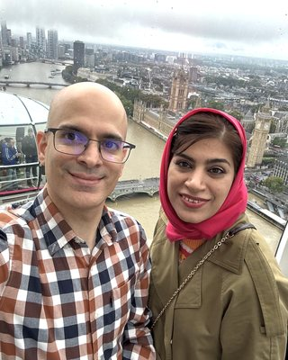

I'm a PhD candidate at Mila and Université de Montréal, advised by Sarath Chandar and Marc-Alexandre Côté, and currently a research intern at Microsoft Research Montréal. I work on large language models and the agents built on them, including safety methods that keep models helpful, test-time scaling for coding agents and diffusion language models, and multi-token prediction. Previously, I was a student researcher at ServiceNow Research and did my M.Sc. on offline reinforcement learning at the University of Alberta and Amii.
New preprint, REAM, on merging experts to compress mixture-of-experts LLMs.
Started a research internship at Microsoft Research Montréal, working on coding agents.
Joined ServiceNow Research as a student researcher.
Started my PhD at Mila and Université de Montréal with Sarath Chandar, supported by a DIRO Excellence Scholarship.
Research
Current directions
Safety and alignment
Safety training that removes unsafe data or teaches refusals often leaves models overly cautious. I study how to keep that knowledge inside the model and control when it is used, and I'm now working on safety alignment for diffusion language models.
Small software-engineering agents that can run on modest hardware. I worked on test-time scaling for FrogNano, a 4B coding agent trained with reinforcement learning, and I'm working on context compaction for coding agents at Microsoft Research.
Language models that write many tokens at once, by denoising a whole sequence or by predicting several tokens per step. I study test-time scaling for diffusion language models and the noise structure of continuous diffusion LMs, and I'm benchmarking multi-token prediction methods and their scaling laws.
Test-time scaling for diffusion LMs · under review
Noise structure of continuous diffusion LMs · ongoing
Multi-token prediction benchmark · ongoing
Efficient, calibrated LLMs
Making large models cheaper to run and more reliable. This includes compressing mixture-of-experts models by merging experts, and training models to sample from the distributions users ask for.
I've also worked on small language agents that learn sub-goals from an LLM (CoLLAs 2024 oral), on faster reinforcement learning by generalizing across state subspaces (TNNLS, Evolving Systems), and on how brains and neural networks represent language and value (EMNLP, eLife).
Maryam Hashemzadeh, Jerry Huang, Minseon Kim, Marc-Alexandre Côté, Sarath Chandar
SafeMoE keeps unsafe knowledge in separate experts and learns, from as few as 100 examples, when to route to them, giving answers that are safer and more informative than standard alignment baselines.
Davide Baldelli, Sruthi Kuriakose, Maryam Hashemzadeh, Amal Zouaq, Sarath Chandar
Fine-tuning on synthetic sampling tasks teaches language models to follow requested randomness, and the skill carries over to unseen distributions and open-ended generation.
Maryam Hashemzadeh, Elias Stengel-Eskin, Sarath Chandar, Marc-Alexandre Côté
Distills an LLM's planning into a 770M-parameter hierarchical agent that needs no LLM calls at inference and beats imitation learning by 16.7 points on ScienceWorld.
Mentor2021Coursera reinforcement learning course by Martha White and Adam White
School mentor2024Summer computer science program for under-represented youth, Montréal
Volunteer2019NeurIPS 2019, Vancouver
Hobbies
When I'm not programming, I spend my time with my sweetheart, Saleh, whose way of understanding the world never stops amazing me. In summer I enjoy playing tennis, badminton and volleyball, and in winter I go skiing and ice skating. I also love art, and whenever I have time I paint with pastels.

Languages
I speak Farsi (native), English (professional working proficiency) and French (intermediate).